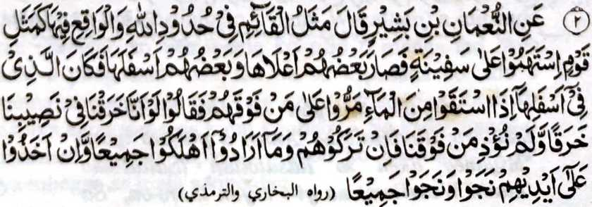

Miyaka thitayan ko No'man bin Bashier (Radhiallaho ‘Anho) a pitharo o Nabi (Sallallaho Alaihi Wasallam), “Aya ibarat o manga tao a inggogolalan niran so manga takes o Allah go so manga tao a pezopaken niran na lagid angkoto a manga tao a mida sangkoto a kapal. Mida so saba-ad sa poro na so saba-ad na si-i sa baba. Na aya betad angkoto a manga tao sa baba na igira maginom siran sa ig na pezagadan niran so manga tao sa poro. Pitharo iran, 'Opama ka lebowi tano angka-iya a kapal sangka-iya a darepa tano ron na di tano pekharimpasan angkanan na manga tao ko atag tano’. 0 di ran (a manga tao sa poro) sapari angkoto a manga tao sa baba ko nganin a kabaya iran na palaya siran khabinasa-an, na o kasapari ran na palaya siran phakaselang sa maliwanag. ” [Piyakaliyo o Bukharie ago so Tirmizi]
Miyaka-isa na so manga Sahabah o Nabi (Sallallaho ‘Alaihi Wasallam) na iniza-an niran, “Ya Rasulollah! Ba kami khabinasa apiya aden a manga ped rekami a manga tao a maaleken ko Allah? Inisembag iyan, “Oway, amay ka loma-olad so marata ko kaphaginged.”
Sangka-iya a masa imanto na so manga Muslim na mi-aawid iran a akal a kiyandarodos angka-iya Ummah, na madakel den a miyapikir iran a ipageren sangka-iya a kandarodos, ogaid na da iran pamikira o antona-ai bekaw angka-iya kiyadarodos. Da iran mapento phiya-piya so titho a sabap angka-iya a kiyadarodos o paratiyaya ago paparangayan tano, balabao ron a so titho a bolong iyan na miyatharo den o Allah ago so Nabi (Sallallaho ‘Alaihi Wasallam). Tanto a piyakarata-rata sa ginawa a sabap ko kiyaribat o pana-awil, na miyaribat so inibolongon sa baden kiyalabawan a kiyadarodos o Ummah, ped ro-o so kinidarainonen ko Tabligh. Aya mata-an na aya bekao o kiyadarodos tano na kena ba giya bo a da tano kasiyapa ko galebek a Tabligh ka di tano pen pagogopan so siran a pithomangkedan niran angka-iya a soti a galebek.